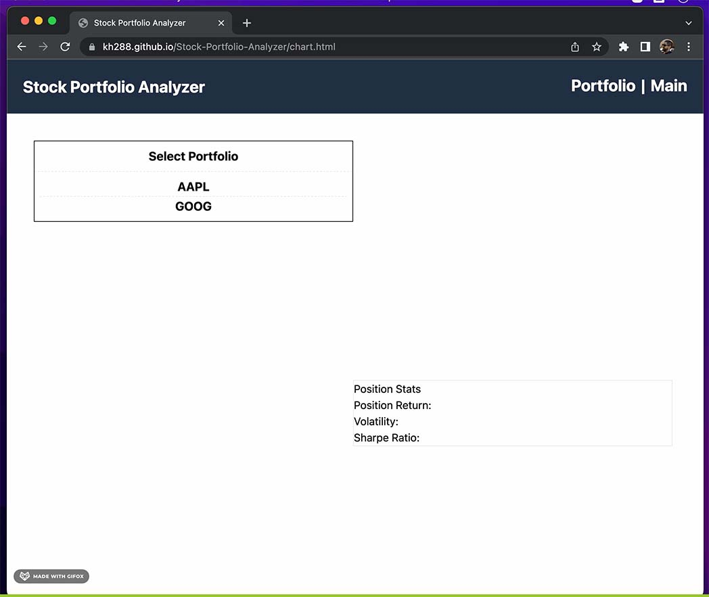
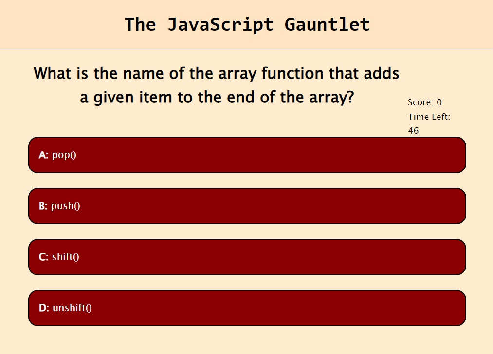

About Me
I am an aspiring full stack web developer. Though I did not study computer science in university (I went for geology instead), I did take a few programming courses and worked as a hobbyist on a few projects of my own. Though I never released anything publicly, I did learn the basics of software design and discovered an interest that I hope to turn into a career.
I currently reside in Anchorage, Alaska, USA. On my off time, I enjoy video gaming, rock collecting, and hiking.
My Projects
Stock Portfolio Analyzer
Website for entering stock portfolio data and performing simple analysis
Deployed Demo GitHub RepositoryPassword Generator

JavaScript-powered website that generates strong random passwords
Deployed Demo GitHub RepositoryJavaScript Gauntlet
A webpage that presents a timed multiple-choice quiz on the basics of JavaScript
Deployed Demo GitHub RepositoryMy Experience
- Writing webpages that leverage many features of HTML 5 and CSS 3, including semantic HTML and responsive design
- Writing webpages that use JavaScript and built-in APIs to dynamically generate content
- Familiarity with popular third-party JavaScript libraries such as jQuery and Bootstrap
- Usage of third-party server side APIs to build data-rich webpages
- Writing programs using Java, such as the front end UI for an app that takes in components of construction jobs and outputs cost and labor estimates